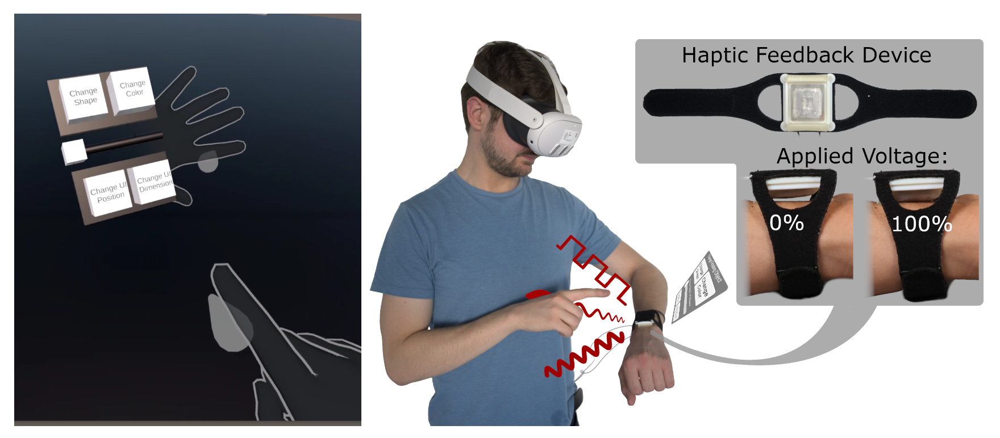

Active Haptic Feedback for a Virtual Wrist-Anchored User Interface

Authors. Jan Ulrich Bartels, Natalia Sanchez-Tamayo, Michael Sedlmair, Katherine J. Kuchenbecker
Venue. UIST Adjunct (2024)
Abstract. The presented system combines a virtual wrist-anchored user interface (UI) with a new low-profile, wrist-worn device that provides salient and expressive haptic feedback such as contact, pressure and broad-bandwidth vibration. This active feedback is used to add tactile cues to interactions with virtual mid-air UI elements that track the user’s wrist; we demonstrate a simple menu-interaction task to showcase the utility of haptics for interactions with virtual buttons and sliders. Moving forward, we intend to use this platform to develop haptic guidelines for body-anchored interfaces and test multiple haptic devices across the body to create engaging interactions.